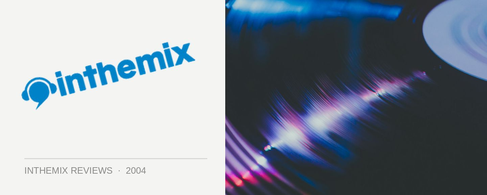

Our House - ...Is Your House
(Global Recordings/Inertia)
While Britain can boast the likes of Sasha, John Digweed and Nick Warren, Australia has crowned its own progressive house maestros. Sean Quinn and Kasey Taylor have been an essential component of the Melbourne progressive scene for many years, and together they form the production team Our House. Receiving critical acclaim from the likes of industry veteran Paul Oakenfold with their single Floorspace in the mid 90’s, the boys have finally taken it upon themselves to release their debut long player …Is Your House. While the album may not offer a lot of appeal to those who aren’t already interested in the music delivered by Quinn and Taylor, for others it serves up something you’re perhaps unaccustomed to hearing: a progressive album.
From the album’s outset, it’s very much clear that Quinn and Taylor weren’t interested in branching out into different styles with …Is Your House, as it nurtures a progressive vein from start to finish. In fact, it plays out just like a progressive mix: starting out slow, it establishes a rhythm before lifting the tempo a little towards the end. As they’ve both been DJs for so long, they seem to have an innate knowledge of how progressive house works, and the songs are rich and textured. But from the beginning it’s also obvious that this won’t win over those who don’t listen to progressive as their chosen genre; the songs take a real long time to get going, and the repeated loops and samples occasionally sound monotonous instead of creating the atmosphere that was intended.
The opening track Soliton Wave (Reprise) is a slow and atmospheric mood builder, preparing the listener for what is to come, and the song that follows is a cover of Tears For Fears’ classic tune Shout, the first single off the album. The tone of the album’s first half is the style of deep progressive breaks that have become so popular with DJs around the world over the past 2 years. Sure, the breakbeat is there, but its temperament is much more in line with that of traditional progressive house. Characterised by deep, dark and robotic sounding basslines, songs like Fire & Ice and Krakatoa are of an excellent quality, and would have no trouble competing with anything of its style being produced elsewhere in the world.
At a little before the halfway point, the tracks that follow could only be classified as dark, brooding house. Light Source finally brings the 4/4 beats in, but continues on the deep and nasty tip. This is deep, slow house music; rather than something designed to blow the roof off a club, the focus is on a myriad of sounds and subtlety, building an atmosphere that’s akin to something a little sinister. It’s not until the eighth track that they finally display a little bit of energy with Clearwater. Slowly, very slowly they build it for five minutes, before unleashing a pulsing bassline and a big progressive chorus. On a whole, the album could effectively be described as subdued. With the exception of the last track Underdog, there is little here that is harmonious, uplifting, or indeed, emotional. Those who turn their nose at what they term “plodding prog” might certainly accuse …Is Your House of being a little boring; a tad drab and flat maybe, failing to get the listener emotionally involved. But then again, Quinn and Taylor obviously didn’t produce the album with worldwide domination in mind.
…Is Your House is an album that was clearly made with progressive fans in mind; and for that very reason, it’s something that all progressive listeners should definitely check out. While to call it deep and slow would really be a gross understatement, those who like their music with a little bit of subtlety and substance are clearly gonna dig it. This music was never really suitable for the clubs anyway – too deep, too slow, and too esoteric. But on your home stereo, it makes for a much better match. At the end of the day, …Is Your House is something that prog-heads would be stupid to miss, and shows further evidence of the increasing trend of artist albums over mix CDs.